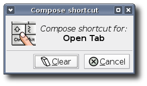

To configure Terminal, choose Edit->Preferences... or right-click the terminal area of the window and choose Preferences.... This will bring up the Terminal Preferences dialog, which allows you to adjust Terminal's behaviour to your needs.

- Initial title
Use this text box to specify the initial title of terminals. New terminals will have the initial title.
- Dynamically-set title
Use this drop-down list to specify how to handle dynamically-set titles, that is, terminal titles set by the commands that run in the terminal.
- Run command as login shell
Select this option to force Terminal to run your shell as a login shell when you open new terminals. See the documentation of your shell for details about differences between running it as interactive shell and running it as login shell.
- Update utmp/wtmp records when command is launched
Select this option to insert a new entry in the utmp and wtmp records when a new terminal is opened.
- Scroll on output
Select this option to enable you to scroll the output on the terminal while the terminal continues to display more output from a command.
- Scroll on keystroke
Select this option to enable you to press any key on the keyboard to scroll down the terminal window to the command prompt. This action only applies if you scrolled up the terminal window and you want to return to the command prompt.
- Scrollbar is
Use this drop-down list to specify the position of the scrollbar in terminal windows.
- Scrollback
Use this spin box to specify the number of lines that you can scroll back using the scrollbar or the mouse wheel. For example, if you specify 1000 you can scroll back the last 1000 lines displayed in the terminal.
- Font
Click on the button to select the font type and font size you want to use for the terminal.
Use the option Enable anti-aliasing for the terminal font to control whether you want Terminal to use anti-aliasing when rendering text in the terminals. Disabling this option can impressively speed up terminal rendering performance and reduce the overall system load on slow systems.
- Background
Select a background for the terminal window. The options are as follows:
- None (use solid color)
Select this option to use the background color that is specified in the Colors section as the background color for the terminal.
- Background image
Select this option to use an image file as the background for the terminal. Use the Image file entry box to specify the location and name of the image file. Alternatively, click on the button besides the entry box to search for and select the image file.
Use the Style option to control the appearance of the background image. Terminal supports tiling, centering, scaling and strechting background images.
- Transparent background
Select this option to use a transparent background for the terminal.
If you have selected Background image or Transparent background, you can use the slider Shade transparent or image background to shade or dim the background of the terminal.
- None (use solid color)
- Display menubar in new windows
Select this option to show the menubar on new terminal windows by default.
- Display toolbars in new windows
Select this option to show toolbars on new terminal windows by default.
- Display borders around new windows
Select this option to show window decorations on new terminal windows by default.
- Foreground and Background
Click on the Text color button to choose the color Terminal uses to draw normal text - an application running inside the terminal can also request a different color choosen from the palette below to draw text.
Click on the Background color button to choose the default background for terminal windows. This color is also used in background tinting when Transparent background or Background image is selected below.
You can also choose to use the colors from the currently active Gtk+ theme by selecting the option Use colors from system theme.
- Palette
The terminal provides the application running inside with a palette of 16 colors. You can customize this colors using the 16 color buttons.
- Disable all menu access keys (such as Alt+f)
Select this option to disable the access keys that are defined to enable you to use keyboard instead of the mouse to select a menu item. Each access key is identified by an underlined letter on a menu or dialog option. In some cases, you must press the Alt key in combination with the access key to perform the action.
- Disable menu shortcut key (F10 by default)
Select this option to disable the shortcut key that is defined to enable you to access the Terminal menus. The default shortcut key to access the menus is F10.
- Shortcut keys
The Shortcut keys section of the dialog lists the shortcut keys that are defined for each menu item. The shortcut keys enable you to use the keyboard to choose a menu item rather than use the mouse. A shortcut key can be any non-modifier key or any combination of a non-modifier key and several modifier keys, where modifier keys are Alt, Ctrl and the like.
To change a shortcut key for a menu item, double click the item in the list and press the key combination you want to set. To disable a shortcut for a specific menu item, double click the menu item in the list and click the button Clear.

- Backspace key generates
Use the drop-down list to select the function that you want the Backspace key to perform.
- Delete key generates
Use the drop-down list to select the function that you want the Delete key to perform.
- $TERM setting
This specifies the value the $TERM environment variable is set to, when a new terminal tab or terminal window is opened. The default should be ok for most systems. If you have problems with colors in some applications, try xterm-color here.
- Reset compatibility options to defaults
Click this button to reset the options on the Compatibility tabbed section to its defaults settings.
- Double click
Use this text box to specify characters or groups of characters that Terminal considers to be words when you select text by word.